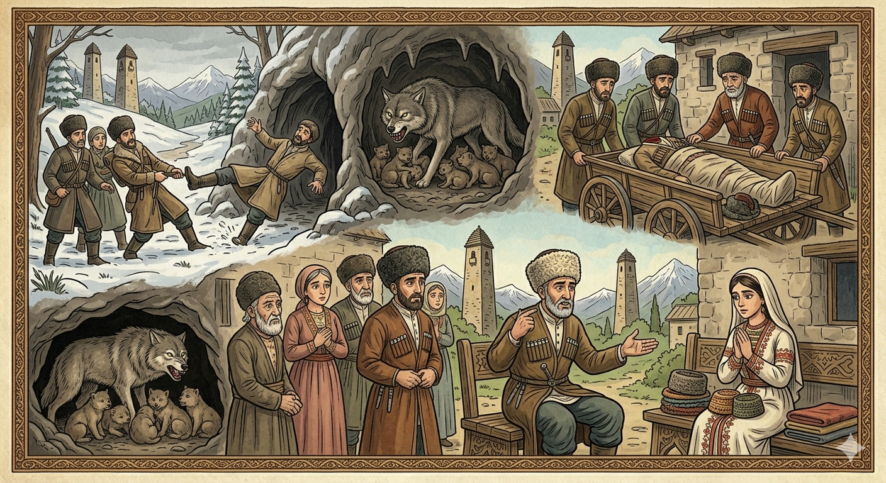

И.А. Дахкильгов. Хьехаме дувцарш - поучительные рассказы-притчи.
И.А. Дахкильгов. Хьехаме дувцарш - поучительные рассказы-притчи. Из ингушского фольклора.

Корта болаш варий из
Цкъа чарахьий хьунагӀа баха хиннаб. Царна юкъе а хул кхетам болаш а боцаш а бола чарахьий. ТӀанийсабеннаб чарахьий лаьтта Ӏочуйодача къорга тӀа. Къорга чу йолхаш лараш а хиннай. Чарахьий вӀаштехьа хиннабац. Къорга чу цхьа аькха хила деза, аьнна, фу дича бакъахьа да уйла е дӀаэттаб. Цхьанне аьннад: - Со чутакхаргва. Кхераме хӀама хуле, аз ши ког хьалтохоргба. СихагӀа аратокхоргва оаш со. Къорга чу ягӀаш хиннай нана-бордз, ший кӀоригаш а тӀехьа. Чарахь къорга чу хьачутакхашехьа, тӀера корта дӀаийцаб берзо. Ши ког хьалтоха кхийнад чарахьа. Новкъосташа хьааракхессав из. Корта боацаш хиннав. ВӀаший дагабувла баьннаб чарахьий: корта болаш вар ер вай новкъост, е боацаш вар, аьнна. ТӀаккха кхы барт вӀашка а ца бена, нахага хатта бахаб ераш. Сесагага хаьттача, из а хиннай йоккха Ӏовдал. ДагадагӀац шийна корт бар е бацар, аьннад цо, тӀаккха тӀатехад: "Шера цхацца кий-м йора аз цунна". ТӀеххьара цхьан хьаькъал долча саго дош хоададаьд цар: - ДегӀа тӀа корта болаш вола саг цу Ӏурга чу мишта гӀоргва, цу кӀала фуд а ца ховш? Корта боацаш хиннав шун новкъост.
РУССКИЙ
А была ли у него голова?
Раз пошли охотники на промысел. А среди охотников тоже бывают и умные, и умом недалекие. Увидели эти охотники в лесу нору, в которую вели свежие следы. Охотники порешили: раз сюда ведут следы, то там затаился какой-то зверь. Но как его взять? Один из охотников сказал: - Я заползу в нору. Если там будет какая-либо опасность, я дерну ногами. Тогда тут же тащите меня назад. Наполовину заполз он в нору. В ней же сидела волчица с выводком. Недолго думая, она перекусила шею и лишила головы незванного гостя. Но он успел дернуть ногами. Охотники тут же вытянули его безголовое тело. Стали они гадать: а была ли у него голова? Охотники не пришли к единому мнению и решили обратиться к жене своего незадачливого товарища. Она ответила, что не помнит, была у него голова или ее не было, замем, подумав, добавила: "Каждый год я шила ему по одной папахе". Наконец, нашелся один более или менее понятливый человек, который и рассудил этих охотников. Он сказал им: - Как может человек, если у него есть голова на плечах, заползти в нору, не зная заранее, кто в ней находится? Наверняка ваш товарищ был безголовый.
ENGLISH
Did he have any head?
Once upon a time, some hunters went out hunting. Among hunters, there are clever ones and not-so-bright ones. These hunters spotted a burrow in the forest with fresh tracks leading into it. They decided that, since the tracks led there, there must be some sort of beast lurking inside. But how were they to catch it? One of the hunters suggested, "I'll crawl into the den. If there's any danger, I'll kick my legs. Then you must pull me back out straight away." He crawled halfway into the den. Inside, there was a she-wolf with her cubs. Without hesitating for a moment, she snapped his neck and beheaded the uninvited guest. But he had managed to kick his legs. The hunters immediately pulled out his headless body. They began to wonder: did he even have a head? Unable to agree, the hunters decided to ask their companion's wife. She replied that she could not remember, but after thinking for a moment she added, 'Every year, I sewed him a papakha.' Finally, they found a sensible man to settle the matter. He told them: 'How can a man with a head on his shoulders crawl into a burrow without knowing who is inside beforehand? Surely your companion was headless."
НОХЧИЙН
Корта болуш варий иза
Цкъа таллархой хьунах бахан хилла. Царна йуккъехь а хуьлу кхетам болуш а боцуш а болу таллархой. ТӀенисбелла таллархой лаьтта охьачуйодучу Ӏуьрган тӀе. Ӏуьрган чу йоьлхуш лараш а хилла. Таллархой кхеташ хилла бац. Ӏуьрган чохь цхьа акхаро хила йеза, аьлла, хӀун дича бакъахь ду ойла йан дӀахӀоьттина. Цхьаммо аьлла: - Со чутекхар ву. Кхераме хӀума хилахь, ас ши ког хьалтухур бу. Сихха аратакхор ву аш со. Ӏуьрган чохь йоллуш хилла нана-борз, шен кӀорнешца. Таллархо Ӏуьрган чу схьачутекхашшехьа, тӀера корта дӀаэцна барзо. Ши ког хьалтоха кхиъна таллархо. Накъосташа схьааракхоьссина иза. Корта боцуш хилла. Вовшех дагабийла боьлла таллархой: корта болуш вар хӀара вай накъост, йа боцуш вар, аьлла. ТӀаккха кхин барт вовшашка а ца бина, нахе хатта бахна хӀорш. Зудчуьнга хаьттича, иза а хилла йоккха Ӏовдал. ДагадагӀац шена корт бар йа бацар, аьлла цо, тӀаккха тӀатоьхна: "Шарахь цхьацца куй-м бора ас цунна". ТӀаьххьара цхьана хьекъал долчу стага дош хададина церан: - ДегӀан тӀехь корта болуш волу стаг цу Ӏуьрган чу муха гӀура ву, цу кӀел хӀун ду а ца хууш? Корта боцуш хилла шун накъост.
ПОГОВОРКИ
Аьхки - мело, Ӏай - хало. - Кому летом легко, тому зимой тяжело. Ва а вий-те шийх аьла ца хетар? - Есть ли такой мужчина, который себя князем не считает? Далла ше малейкийла везагӀа лаьрхӀа хиннав Адам-пайхамар, цудухьа адамал дезагӀа хӀама а дац. - Сам бог Дяла вознес пророка Адама над ангелами, поэтому человек (адам) - лучшее из божьих творений. ЛийрхӀар хиннадац дегӀар мара. - Происходит не то, что мы предполагаем, а то, что нам суждено. Цогало яьхад: "ДикагӀдар да - жӀалена ше галехьа, жӀали шийна гар". - Лиса сказала: "Самое лучшее увидеть собаку прежде, чем она увидит тебя". Яха ца тугача говро шод еттийт шийна. - Заупрямившаяся лошадь кнута заработала. Ди шийбар дикагӀа хет, сесаг наьхаяр дикагӀа хет. - Свой конь кажется лучше других, чужая жена кажется краше своей. Паччахьа ца даь сий ага уллача бера даьд. - Ребенку в люльке больше почета, чем самому падишаху. Хано дӀаэц дег тӀара бала. - Время уносит горе из сердца. Эрий ара хье цхьаькха висача а, хьай дегӀаца эздел леладе. - Если даже ты один и в безлюдной пустыне, будь благородным сам для себя. Хьа валарга хьежжа да хьона деша яьсий. - Твоей смерти (жизни) соответствует читаемая тебе отходная молитва.